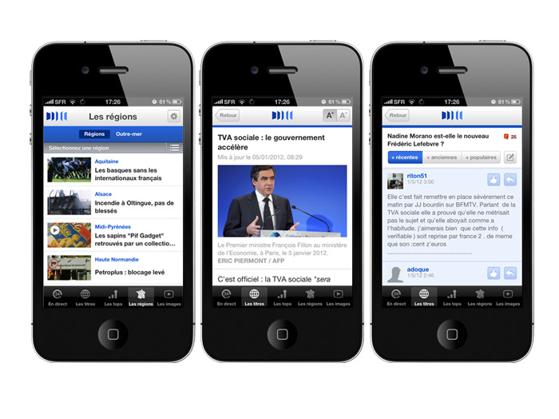
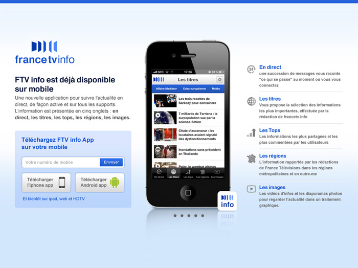
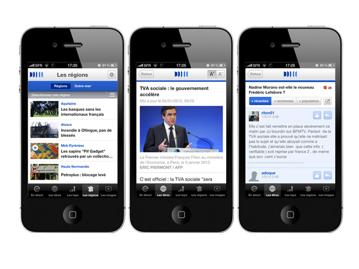
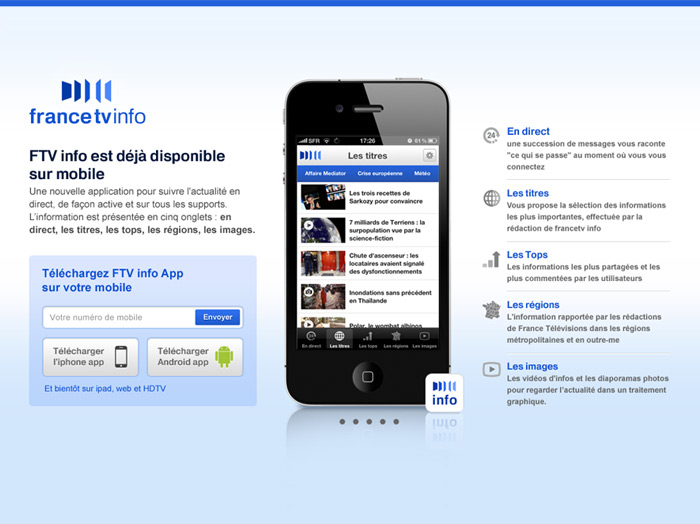
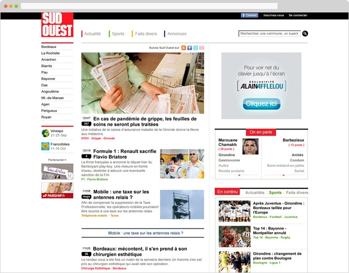
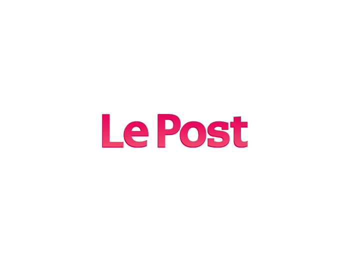
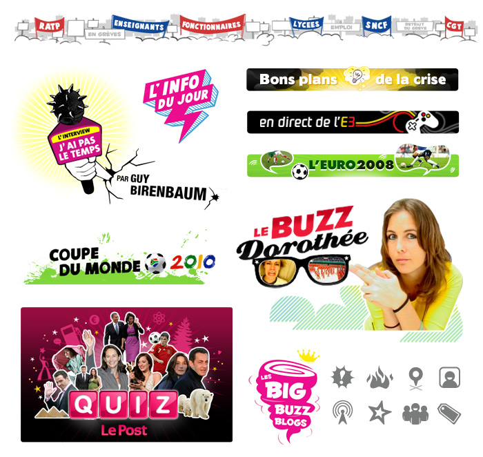

Sites, Apps and Branding
Designing News for French Audiences 🇫🇷
For 6 years, I worked closely with three traditional news media organizations in France to develop product design direction and strategy from ground-up for their new digital platforms.
France TV Info
France TV Info is the French Public television broadcaster France Télévisions’s first online news platform. In collaboration with the editorial strategist and engineering firm, I led the design direction and shipped a suite of product for “FTV Info” from iOS app, mobile site, desktop site, interactive stories and election features.
 



Groupe Sud Ouest
Groupe Sud Ouest is a news & media conglomerate based in the Bordeaux, France that owns a handful of newspapers, magazines and TV stations in the southwest region of France. Along with a producer and content strategist, we redesigned 6 regional news sites by working with the local newsrooms to modernize the information architecture, standardize the layout to simplify content management, and maximize programmatic ad offering to drive revenue.


Le Monde
Known as the New York Times in France, Le Monde is one of the oldest media brand based in Paris. To attract the younger generation of news consumer, Le Monde created a Le Post.fr, a social newsfeed that mixed stories and videos from journalists and readers. I lead the design direction of the brand, website, IOS app and graphical editorial guidelines. Le Post.fr was sold to Huffington Post in 2012.


